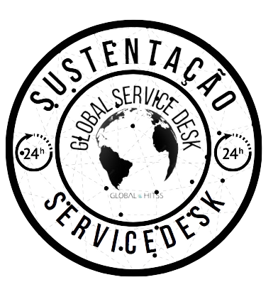
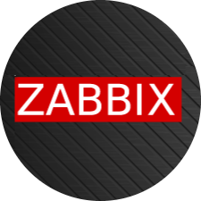
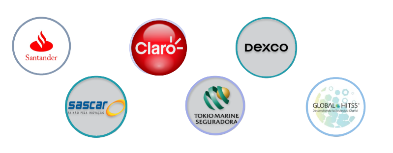
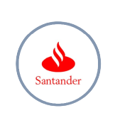
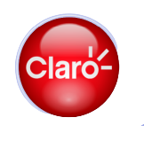
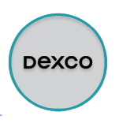

Oferecemos as Soluções de T.I que o seu negócio precisa

Hello.
Oferecemos serviços de T.I, service desk, monitoramento e Suporte avançado para empresas
de todos os tamanhos e segmentos.
Nossas Soluções
Service Desk
Com uma equipe com vasto conhecimento e experiência em suporte, podemos
gerenciar e adminsitrar o serviço de service desk da sua empresa seguindos as melhores práticas do
mercado. Fazemos o gerenciamento de incidentes, problemas, mudanças, conhecimento e melhoria
continua do T.I da sua organização. Apresentamos resultados mensais que podem ser medidos e usados
para criação de estratégias para melhoria do negócio.
Suporte de T.I
Temos profissionais experiêntes e com expertise em todos os níveis de
suporte que o seu negócio precisa. Desde o Nível 1 para atendimento inicial e troubleshooting, até o
nível 3 para problemas complexos na infraestrutura e sistemas da sua empresa.

Monitoramento
Temos as ferramentas certas que o seu negócio precisa para garantir a
disponibilidade e uma resposta rápida em situações de Crise. Com profissionais capacitados e prontos
para resolver o seu problema.
Projetos e Cases de sucesso


Santander
Gerenciamento do serviço de Service Desk, e help desk nível 1 e 2 para o
cliente Santander.
Help Desk nível 1 e 2
Gerenciamento de sistema de Tickets
Gerenciamento de incidentes, problemas e mudanças
Gestão do conhecimento
Aplicação do conceito de melhoria continua seguindo o guia de boas práticas da ITIL
ITIL V4
Apresentação dos resultados operacionais visando aprimoramento da area de T.I para apoio do negócio
Sascar
SGerenciamento do serviço de Service Desk, e help desk nível 1 e 2 para o
cliente Sascar.
Help Desk nível 1 e 2
Gerenciamento de sistema de Tickets
Gerenciamento de incidentes, problemas e mudanças
Gestão do conhecimento
Aplicação do conceito de melhoria continua seguindo o guia de boas práticas da ITIL
ITIL V4
Apresentação dos resultados operacionais visando aprimoramento da area de T.I para apoio do negócio

Claro
Gerenciamento do serviço de Service Desk, e help desk nível 1 e 2 para o
cliente Claro.
Help Desk nível 1 e 2
Gerenciamento de sistema de Tickets
Gerenciamento de incidentes, problemas e mudanças
Gestão do conhecimento
Aplicação do conceito de melhoria continua seguindo o guia de boas práticas da ITIL
ITIL V4
Apresentação dos resultados operacionais visando aprimoramento da area de T.I para apoio do negócio
Tokio Marine
Gerenciamento do serviço de Service Desk, e help desk nível 1 e 2 para o
cliente Tokio Marine.
Help Desk nível 1 e 2
Gerenciamento de sistema de Tickets
Gerenciamento de incidentes, problemas e mudanças
Gestão do conhecimento
Aplicação do conceito de melhoria continua seguindo o guia de boas práticas da ITIL
ITIL V4
Apresentação dos resultados operacionais visando aprimoramento da area de T.I para apoio do negócio

Dexco
Gerenciamento do serviço de Service Desk, e help desk nível 1 e 2 para o
cliente Dexco.
Help Desk nível 1 e 2
Gerenciamento de sistema de Tickets
Gerenciamento de incidentes, problemas e mudanças
Gestão do conhecimento
Aplicação do conceito de melhoria continua seguindo o guia de boas práticas da ITIL
ITIL V4
Apresentação dos resultados operacionais visando aprimoramento da area de T.I para apoio do negócio
Global Hitss
Gerenciamento do serviço de Service Desk, e help desk nível 1 e 2 para o
cliente Global Hitss.
Help Desk nível 1 e 2
Gerenciamento de sistema de Tickets
Gerenciamento de incidentes, problemas e mudanças
Gestão do conhecimento
Aplicação do conceito de melhoria continua seguindo o guia de boas práticas da ITIL
ITIL V4
Apresentação dos resultados operacionais visando aprimoramento da area de T.I para apoio do negócio
Certificações
Algumas das certificações que nós possuimos:
ITIL V4
ISO 27001
Zabbix Aplicação e monitoramento de Internet
Administração Linux CentOS e Red Hat Enterprise Linux
Grafana
Gerenciamento de serviços com GLPI
Windows Server, Active Directory e Politica de Grupo
Para mais informações, entre em contato conosco nos meios de comunicação disponíveis.
Entre em contato
Se você está procurando por uma solução de T.I para apoiar o seu negócio, entre em contato com um dos
nossos consultores. Nós vamos analisar a sua necessidade e oferecer a melhor solução.
Você pode nos contatar através de email, telefone ou teams.